Hello! 👋 This is LunaTang
GDUT · Electronic Information · Undergraduate Student
Contributions & Experience
心语工作室 · 视频部核心成员
心语工作室是广工校心协旗下的学生社团，我主要负责心理知识科普、活动记录采访、社团招新等各类视频的独立剪辑与公众号推送
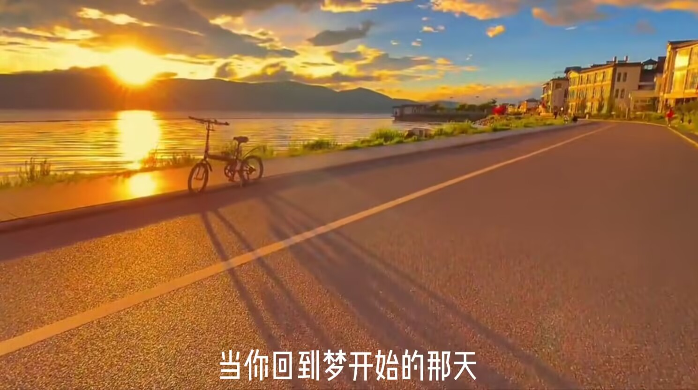
人生如逆旅，我亦是行人
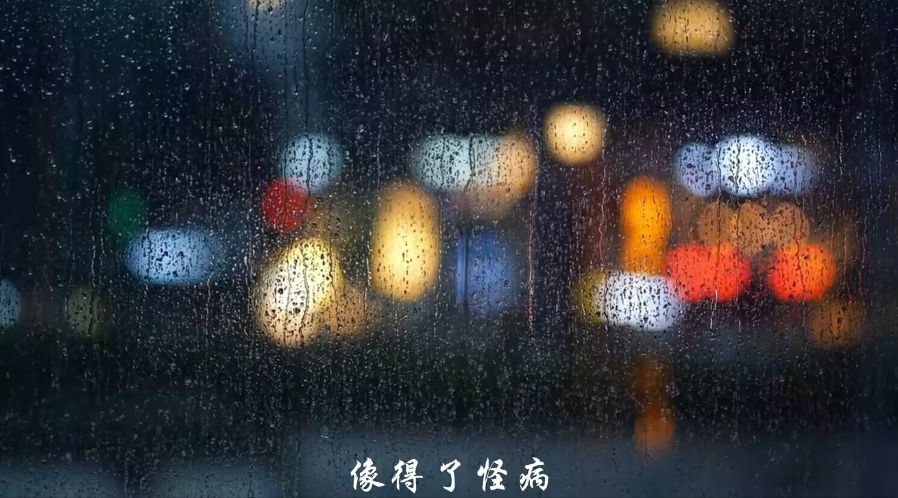
茫
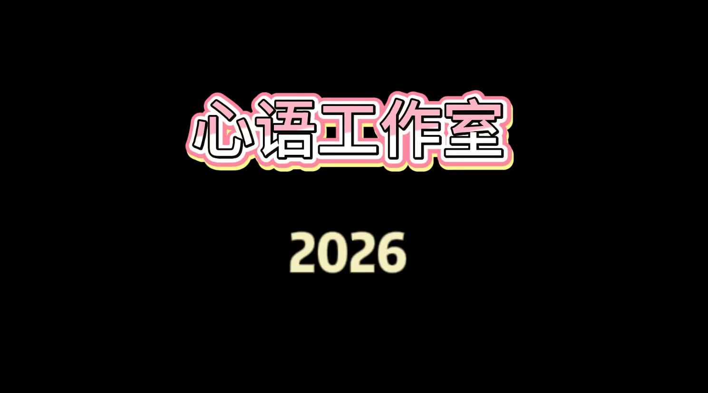
心语2026招新
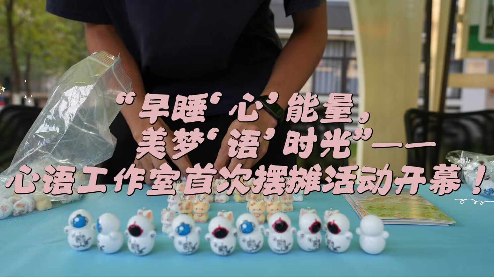
采访实拍 · 睡眠活动
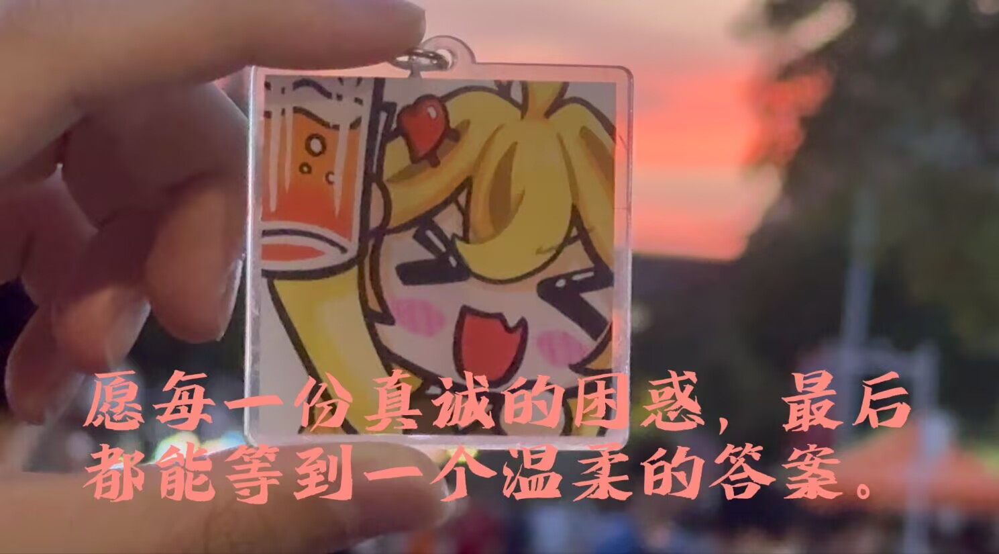
525心理健康节
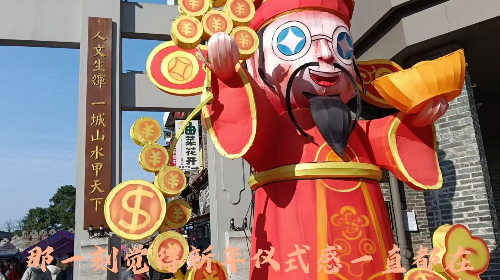
年味vlog
English Learning
CEFR · B2
大一期间在希芙领思校外英语培训机构完成了从 A2 到 B2 的系统学习，通过全英 Presentation、新闻播报、模拟面试及模拟联合国等多元化实践活动，实现了从基础日常交流向高阶逻辑思辨的提升，已具备用英文进行复杂分析与综合输出的能力。
A2
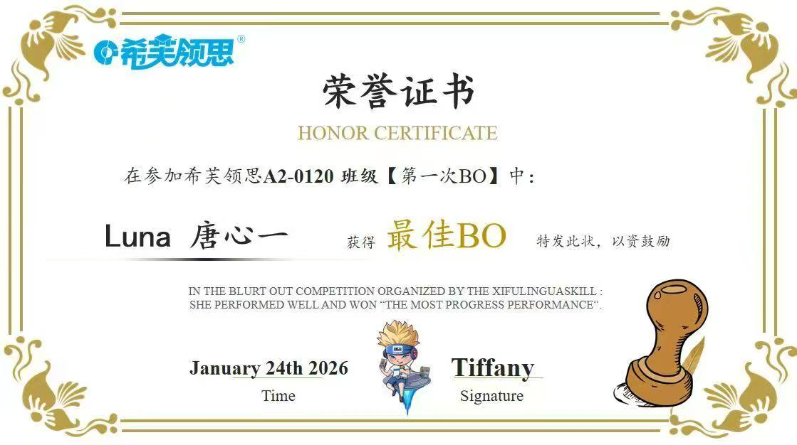
A2阶段学习证书
B1
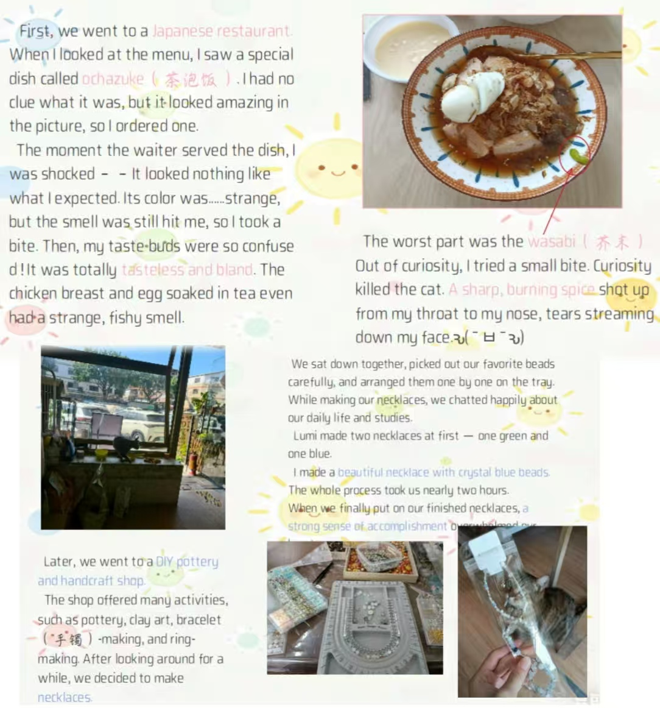
B1阶段英文Blog（获最佳）
B2
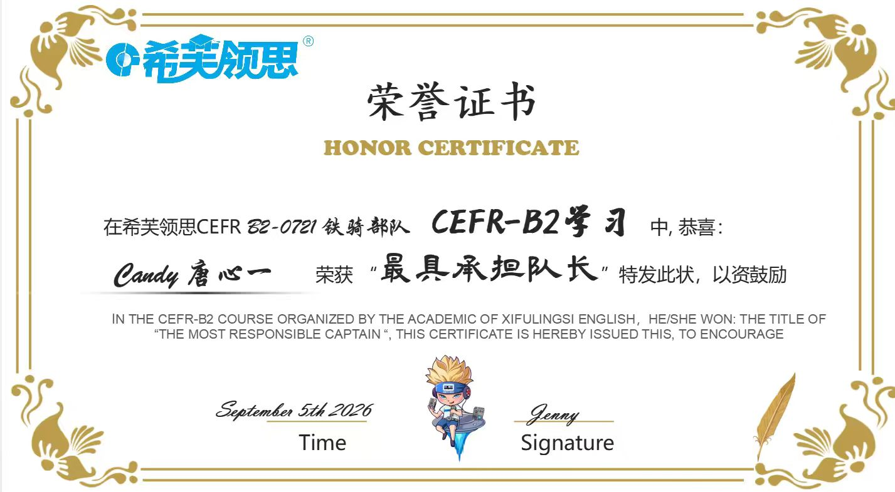
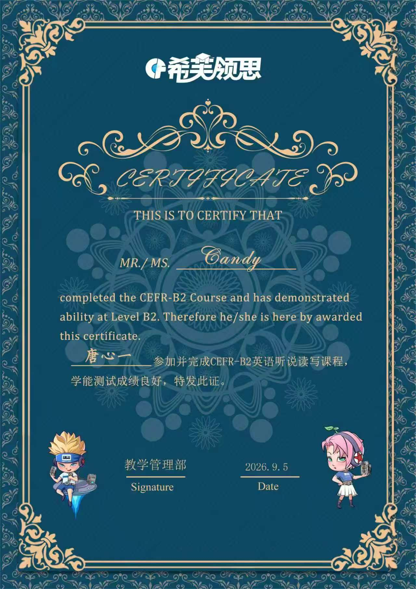
B2结业证书 & 最具承担队长荣誉
Current Focus & Learning
大一暑假开始接触 STM32，从最基础的 GPIO（流水灯、蜂鸣器）开始，逐步理解底层硬件逻辑与 C 语言控制。
· LED 流水灯
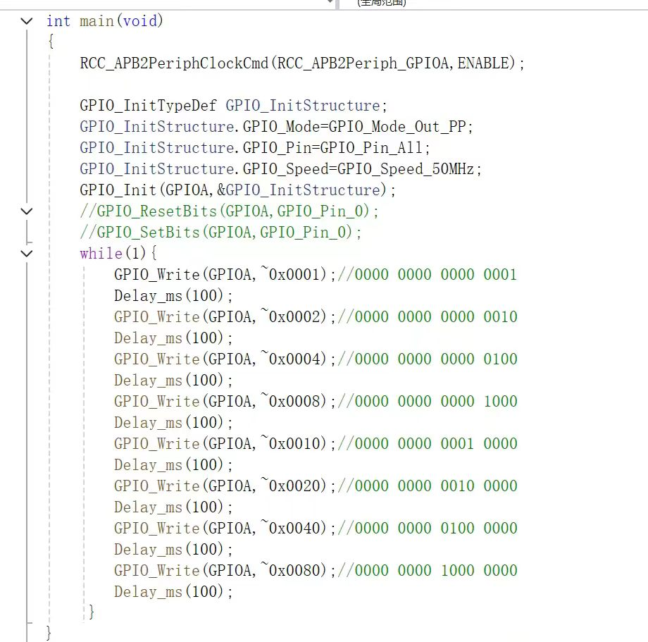
代码截图占位学习 GPIO 基础配置，设置引脚为输出模式，通过循环改变引脚高低电平，实现 LED 轮流点亮的流水效果。
· 光敏传感器控制蜂鸣器
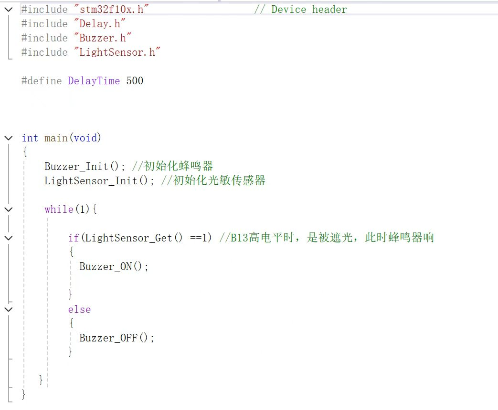
代码截图占位读取光敏传感器的模拟值，判断环境光线强弱；设置阈值，光线达到条件时驱动蜂鸣器发声。